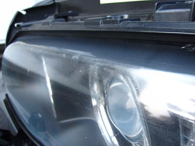
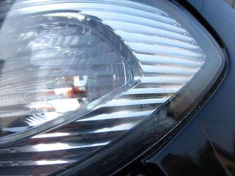
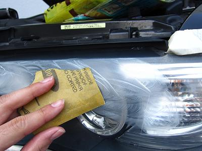
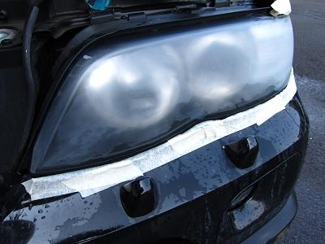
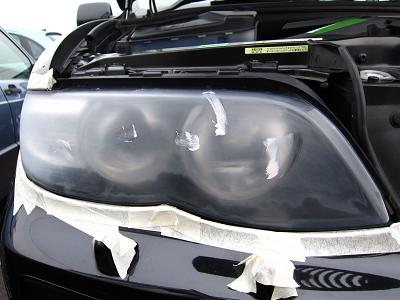
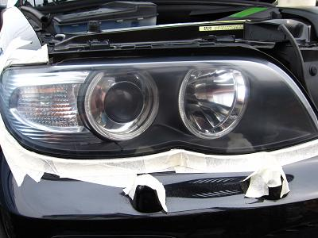
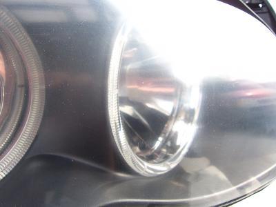
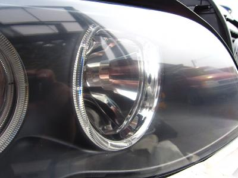
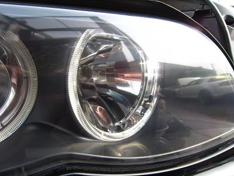
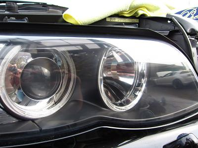

  今回の対象車両は2006年のE53 X5だ。 最初は屋根付き車庫だったが、最近は屋外駐車らしい。 全体的にレンズが曇って、所々にささくれができている・・・ |
  黄色く曇っているだけなら、それを落とす専用のコンパウンドがあるが、今回はささくれができているので、全体を紙やすりで水研ぎする。 その前に、ボディーに傷がつかないようにライト周りはマスキングテープで保護しておこう。 400番→800番→1500番→2000番と研いでいく。この行程でライト１つにかかる時間はだいたい30分くらいだ。 2000番まで研磨が完了すれば、全体を手で撫でてみて、均一に研磨できているかチェックしよう。 |
  ここからはコンパウンドと電動工具を使って作業していく。 今回はボディーを磨くポリッシャーを使うが、無ければスピード調整機能の付いたディスクグラインダーでも代用できる。 ディスクグラインダーを代用する場合は、回転部分は砥石ではなくスポンジバフを使う！ ←あたりまえ？（笑 電動工具がない場合は、手で磨いても大丈夫そうだ。時間はかかるだろうが・・・ 左がコンパウンドで研磨前 右が研磨後だ。 これだけでもささくれや曇りが消えて綺麗に見える。 コンパウンドを粗目→細目→極細と使い分けてさらに透明度を上げていく。 使用するコンパウンドはボディー磨きの物でＯＫだ。 |
 これは粗目で磨いた状態 近づくとまだ少しモヤッとしている。 元々の状態から見れば、これでも綺麗になったほうだ。 |
 これが細目で磨いた状態 上よりも少し透明感が出た。でもまだ磨き傷がうっすら見える。 |
 これが極細で磨いた状態だ。 新品のように透明だ。もちろん磨き傷も見えない。 最後は劣化防止の為に市販のトップコートを塗布して終了だ。 |
 ヘッドライトが綺麗だと車全体が綺麗に見える。 光量も少し落ちていたように思うので、これで夜のドライブも安心だろう。 紫外線で劣化した場合は、交換する前に一度磨いてみることをオススメする。 Special Thanks:prestig |